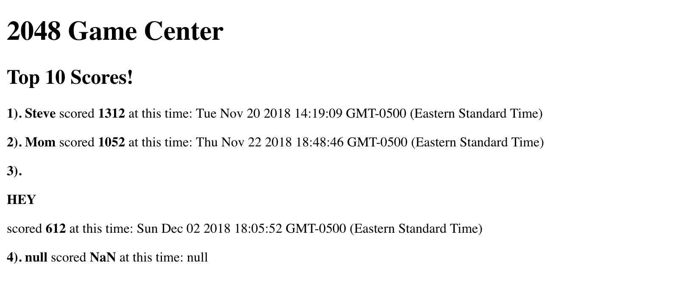
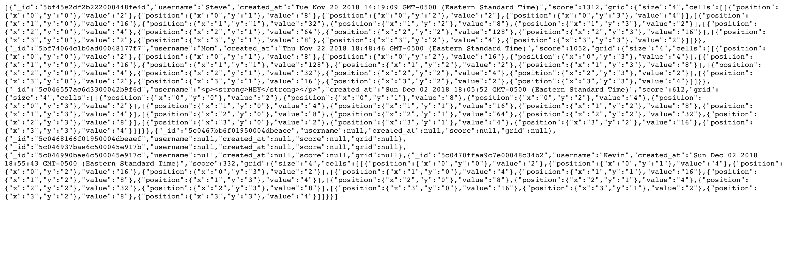
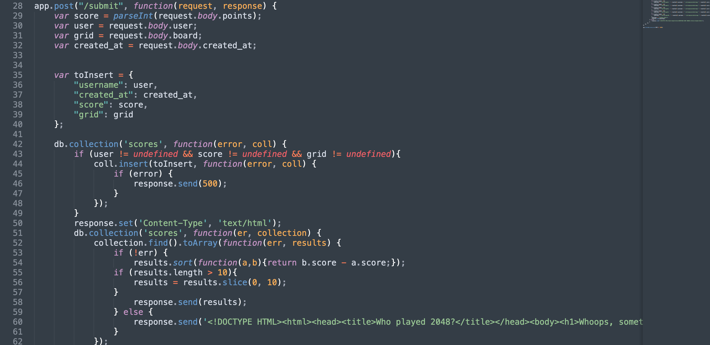
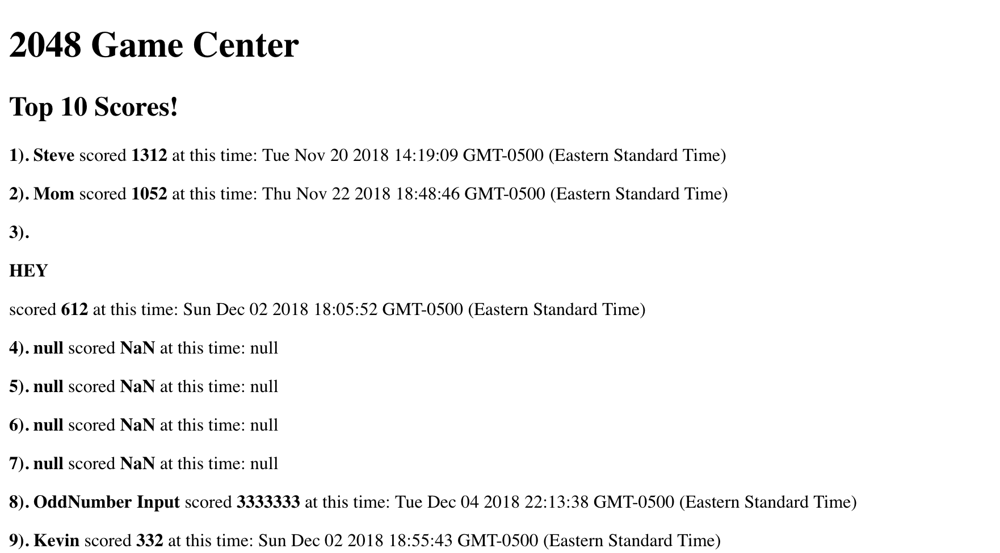

A Security and Privacy Assessment of Stephen Bonish's 2048 Database
By Matthew Fiedler
Introduction
The purpose of this attack is to find all weaknesses within Mr. Bonish's code. There are some fatal flaws in his 2048 database implementation and they leave the program vulnerable to hackers and others who may want to ruin his website. His program records information by checking to see if the user has defined strings for the player's username, score, and grid. If these all exist, they are recorded into the database. The information can then be retrieved in two ways. The user can either request to see the top ten scores for each username in JSON format or they can see the top ten scores of all time ranked from highest to lowest and when they were accomplished. With so many moving parts in the program, it leaves a lot of room for vulnerability and the potential for an attack on the site. It is my job to find these vulnerabilities so that Mr. Bonish can fix them and make sure that no one can ruin his work.
Methodology
In order to test this, I first tried to use the curl tool to see what was expected in a submission to the database. Unfortunately for me, the database appeared to not respond to this tool and I could not just add my own values to it. I would not be able to attack the program so simply. After reading and learning the code, I realized that it was vulnerable XSS attacks, so I played around with some of those. After confirming that this was one vulnerability, I moved on the next. After some research of NoSQL injection, I appended a line that I found would work to expose all of the data in the database and it worked well. I had all of the data in front of me in perfect JSON format. Finally, I found a vulnerability that I had overlooked initially. I found that the program never checks for valid or even possible input. Therefore, I could populate it with any values I wanted to and ruin the data set. To do this I had to hardcode the values I wanted to test in his program as I was unable to use a simpler tool like curl.
Abstract of Findings
I found that this program is quite vulnerable. The most obvious and important concerns are in potential attacks from cross site scripting, NoSQL injection, and inputting false or invalid information. Cross site scripting means that, due to the way the program asks for the player's username, the site can be hacked by the user inputting malicious code in the username query. NoSQL injection allows for someone to access all information within the database. This allows them to scrape and use all of the data. In this project, the data is not very personal or important, but when it comes to databases that store very sensitive information, the program puts all of the data in a position where it can be stolen very easily. Finally, I found that the program allows any values to be entered as the score and/or the grid as well. This could lead to the program being populated with false information that would ruin the database. If even one of the inputs is false, the database cannot be used as an accurate representation of the game's results.
Issues Found
1. Cross Site Scripting Attacks
- This site is vulnerable to XSS attacks as there is no checking what was inputted when the player is asked to enter a username. This allows the user to type in whatever they want and this may include harmful scripts.
- This is a seriously harmful flaw as the scripts can allow the user to augment the page in any way they would like to. In this case, as a test I put in a line that would disrupt the style of the page by putting the word "HEY" on its own line and in bold (seen below after the third statement). My attack was minor, but someone else's could be far more severe.

- This problem would be alleviated by stripping the input of special characters. Therefore, anything that is inputted as the username cannot contain anything harmful. It would just contain a string of alphanumeric letters which could not have a negative effect on the page. This could be done by changing all special characters to alphanumeric values as soon as they are passed in or by just completely stripping them away immediately.
2. NoSQL Injection
- The site is also vulnerable NoSQL injection. This is when the input given by the user is actually a script designed to extract information from the database. By simply adding "/scores.json?username[$ne]=" to the URL, the program immediately spits out all of the information stored in the database. As can be seen in the image below, the page shows all of the JSON data for all of the inputs that have ever been added to the database.
- This flaw puts the entirety of the database in jeopardy. It allows for anyone to extract any and all information within the database.

- The best way to avoid against these attacks is to write a function that not only evaluates that the input is correct, but also that the input's type is correct. If both the input and the type match, then it's safe to continue.
3. Does Not Check to See if Scores or Grid are Valid
- Another reason why the database is vulnerable is because it can easily be populated with invalid values. It should only take score values that are obtainable through playing the game. While the lowest possible score of playing the game is zero, the database should only be able allowed to record scores that are divisible by two and greater than zero. As can be seen from line 43 and on, the program does not check for these cases. It only checks that the parameters are not undefined.

- This issue is not extremely severe, but it is significant. It allows for outside users to have the ability to populate the database with pretty much whatever they want and basically litter all over it. This can lead to the high scores being inaccurate and makes the data essentially worthless as it can longer be trusted if someone wanted to use it. With illegitimate data, the database is useless and not trust-worthy. As can be seen here in the eighth input, the set is easily populated with plenty of false data.

- In order to fix this error, the program must make sure that the data comes straight from the game. That is the only way to be sure that the data is accurate. On top of that, it must make sure that the score is, at the least, always an even number and that all tiles within the recorded grid must be a number that satisfies the equation y=2^x where x must be greater than zero.
Conclusion
In conclusion, this program is vulnerable, but it can be saved. As long as the program starts to protect against invalid injections and is most stringent about allowing access to the data, it has the potential to become a bullet-proof program. In furthering the security of the program, it may be wise to start assessing the final score of the game and comparing that to the final grid to see if the grid would yield that score. It is possible to get the same score from different grids, but even so this would make the program much harder to attack.
References
https://searchsecurity.techtarget.com/definition/cross-site-scripting
https://blog.sqreen.io/prevent-nosql-injections-mongodb-node-js/